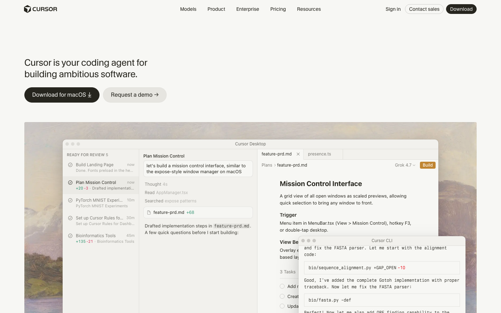
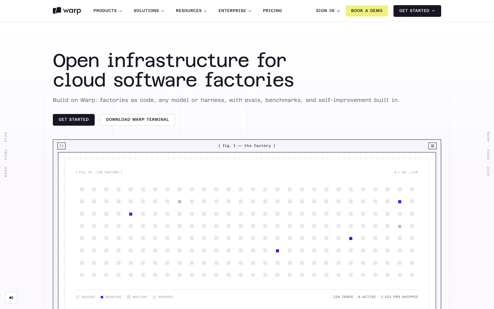
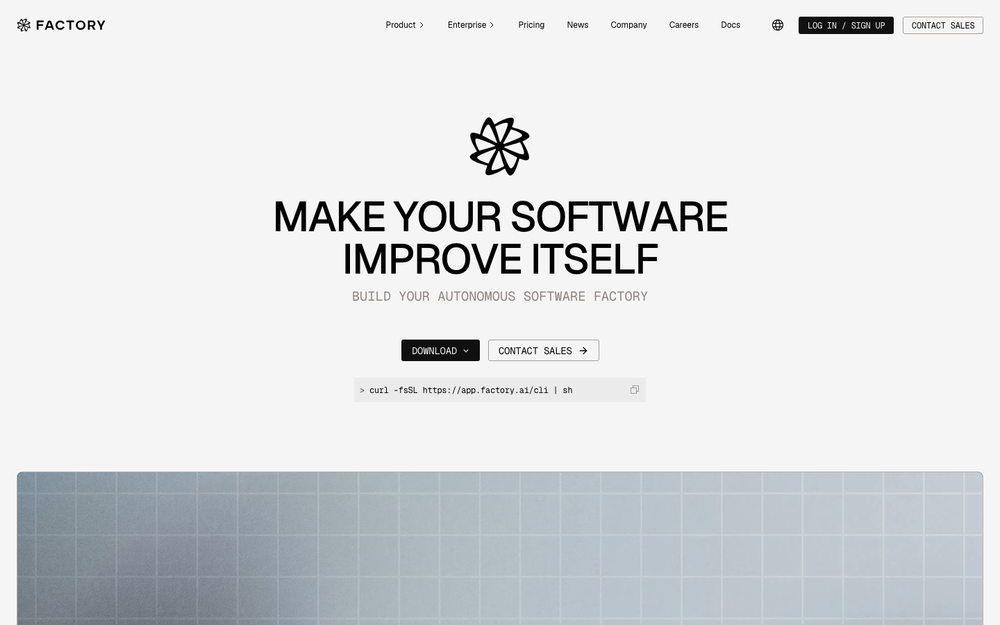
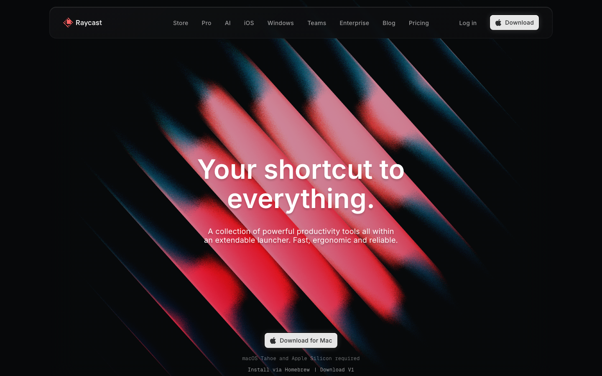
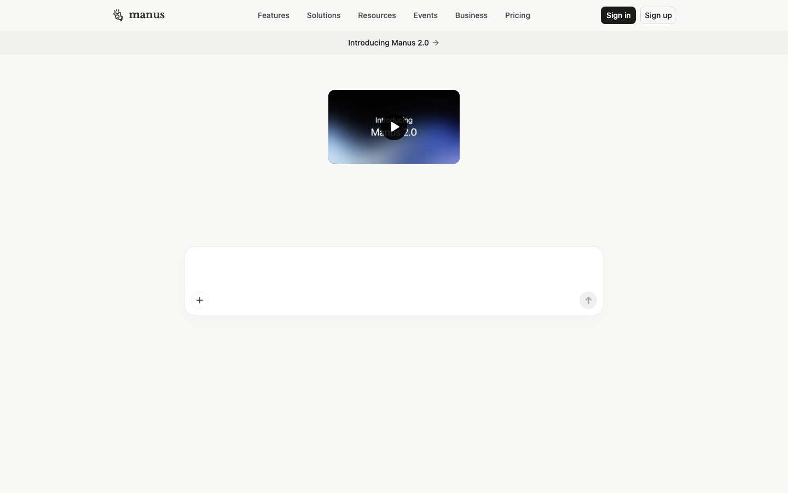
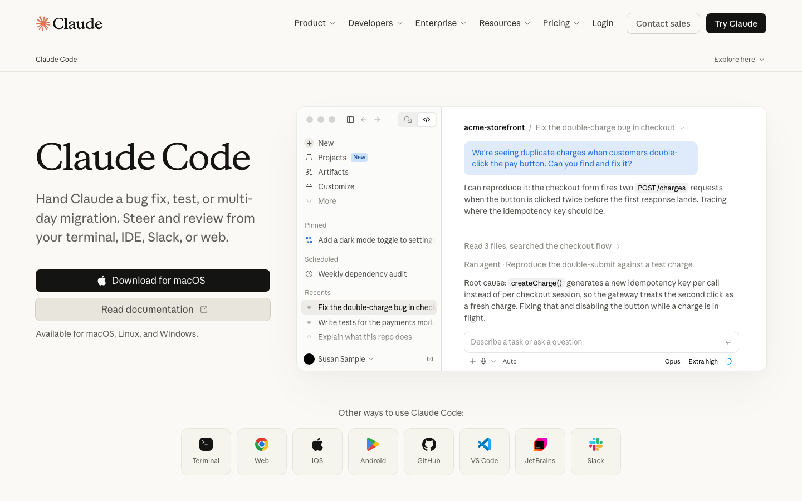
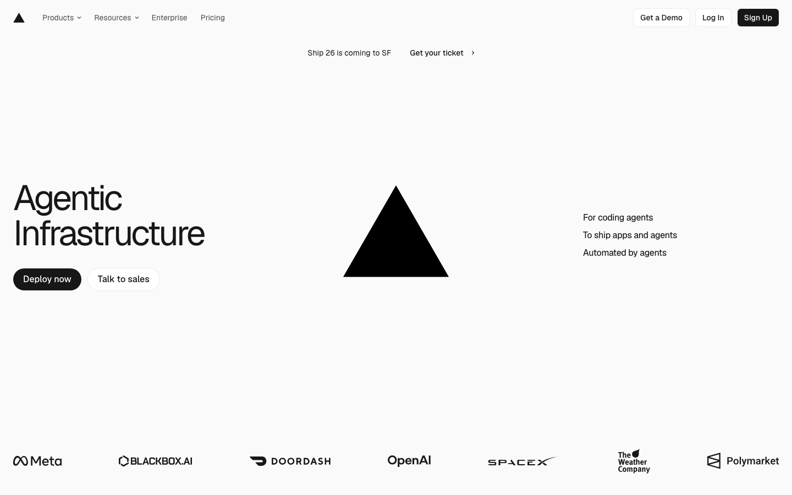
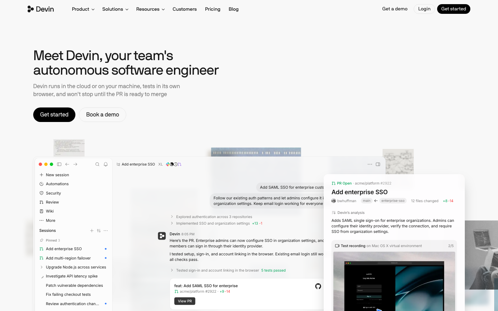
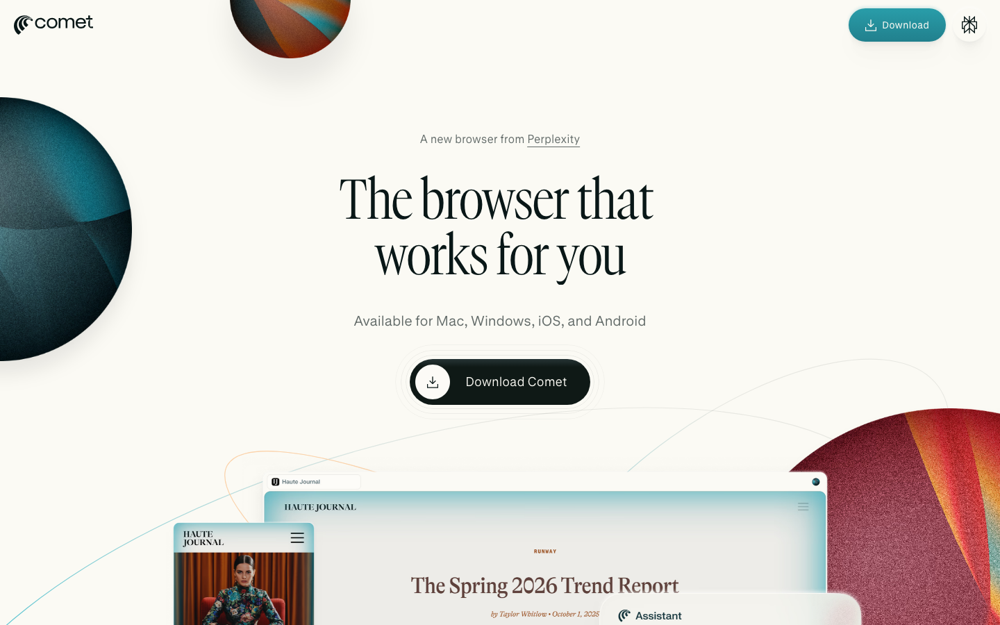

2026-10 · 支撑品牌视觉规范和上架决策的外部调研，单独存放，不进入规范正文。
截了 11 家公司的官网首屏，总结出下面 5 条做法，以及 Hey Atu 规范里是怎么落地的。
| 做法 | 谁在这样做 | Hey Atu 怎么用 |
|---|---|---|
| 产品界面就是主视觉 | Cursor、Linear、Devin、Claude Code | 商店截图和宣发都以真实 App 界面为主角 |
| 近黑或近白底，只用一个强调色 | Kiro（紫）、Factory、Warp（黑白加一点黄） | Ink / Paper 两种底，强调色只用焦糖色 |
| 等宽字体就是品牌声音 | Warp、Factory、Kiro | Departure Mono 做标题，JetBrains Mono 做字标和标签 |
| 终端质感的低调纹理 | Warp、Factory | 28px 点阵加一处焦糖光晕 |
| 吉祥物克制出场 | Kiro 的幽灵只出现在 logo 和少量插画 | 玩偶只在 App 内和宣发里客串 |
| 不做的方向 | — | 咖啡馆或生活方式摆拍、图库照片、手持手机 |









Android 是操作系统，Google Play 是 Android 上的一个应用商店，也是中国以外最主要的那个。同一个 Android 安装包可以发到多个 Android 商店。iOS 只有 App Store 一个商店（欧盟的替代商店这里不考虑）。
| 渠道 | 平台 | 状态 |
|---|---|---|
| Google Play | Android | 先建条目，开测试轨道 |
| App Store | iOS / iPadOS | 等 Apple 开发者账号审批 |
| Claude 连接器目录 | MCP（网页端） | 发布计划里排第一 |
| ChatGPT 应用目录 | MCP（网页端） | 排在 Claude 之后 |
| 商店 | 现状 | 建议 |
|---|---|---|
| Samsung Galaxy Store | 三星手机预装，可以用同一个安装包；要求名称、图标、截图和设备上看到的一致 | 第二阶段可以考虑，物料复用 Play 那套 |
| Huawei AppGallery | 华为新机没有 Google 服务，我们依赖的 Google 登录和推送都要改 | 暂不考虑 |
| Amazon Appstore | 2025-08-20 起不再支持 Android 手机，只剩 Fire 平板和电视 | 不考虑 |
| 国内厂商商店（小米、OPPO、vivo、荣耀、应用宝） | 需要国内主体、软著和 ICP 备案 | 不适用 |
| 官网直接下载 APK | 2026-09-30 起部分国家要求开发者先做身份验证，2027 年推广到全球 | 不作为主渠道 |
一套品牌和一条截图故事线，按每个商店的规格分别导出。下表是通行做法；具体数字已经和两家官方文档逐条核对过（2026-10-13）。
| 两个商店共用 | 每个商店单独做 |
|---|---|
| Logo、图标图形、配色、字体 | 图标导出规格：Play 512 满版正方形，商店自己加 30% 圆角；Apple 1024 不透明，系统加遮罩 |
| 截图的叙事顺序和标题 | 截图尺寸：Play 1080×1920；Apple 1206×2622（必需）、1320×2868、iPad 2752×2064 |
| 描述文案的主体 | 文字字段：Play 短描述 80 字；Apple 副标题 30、推广文本 170、关键词 100 字节 |
| 宣发物料 | Play 独有 1024×500 宣传横图 |
| — | 截图里必须是该平台自己的真实界面，也不能提到另一个平台（Apple 2.3.10；Play 要求截图展示真实的 App 体验） |
| 门槛 | Google Play | App Store |
|---|---|---|
| 安装包 | .aab，2026-08-31 起 target API 36（Android 16） | Xcode 构建包，通过 App Store Connect 上传 |
| 账号 | 2023-11-13 以后注册的个人账号要先做封闭测试：至少 12 人连续 14 天；组织账号需要 D-U-N-S 编码 | Apple Developer Program（审批中） |
| 审核访问 | App access 声明：要给审核员可用的登录方式 | 演示账号或演示模式（2.1） |
| 隐私 | Data safety；能创建账号就必须能删除账号 | App Privacy 隐私标签 |